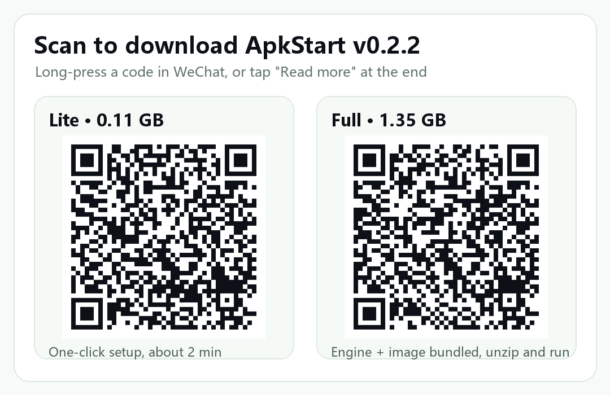

ApkStart v0.2.2 is out: a free, open-source Android app launcher for Windows, with a new "full" edition that bundles the engine and an Android 14 compatibility image — unzip, double-click, done, zero downloads and zero setup.
Opening an Android app on Windows usually means: downloading a multi-gigabyte emulator → setting up the environment → finding the APK → dragging it in → putting up with popups and fans at full blast. And after all that you may still get INSTALL_FAILED_NO_MATCHING_ABIS — the package only ships ARM native libraries and will not install.
So I wrote my own: ApkStart.
It is an ultra-light Android app launcher for Windows: associate .apk files with it and a double-click installs them, with a desktop shortcut created automatically, one independent window per app, and a shared folder between the PC and Android for dragging files in both directions.
① Double-click to install. After associating .apk, a double-click installs it; the app name and icon are read automatically and the desktop shortcut is created in one step — no emulator console to open.
② Independent windows. Each app runs in its own freely resizable window (am start --windowingMode 5), out of the way of the others, laid out like native Windows programs.
③ File interchange. %USERPROFILE%\ApkStartShared is wired to the shared directory inside Android; drag a file in from the PC and the app can open it directly.
④ Official engine + hardware acceleration. The base is Google's official Android Emulator and the AEHD driver; official sources are downloaded with 8 parallel threads, runtime components are verified and managed by the app itself, and the shell has zero third-party dependencies.
The new version does two things.
First, the full edition works out of the box. Previously the first launch needed a click on "one-click deploy" to download the engine and image (about 2 minutes). Now the full edition packs all of it into the installer: the runtime engine, platform-tools, the AEHD driver, and an Android 14 compatibility image with the ARM translation layer. Unzip and double-click ApkStart.exe, all four checks come back green, and you are on the main screen — zero downloads, zero setup.
Second, ByteDance apps now run. Previously packages like Hongguo Short Dramas that only ship arm64-v8a crashed right after the privacy dialog on the old API 30 image (in libndk_translation, at DoBadTrampoline). With the Android 14 image the new translation layer fixes it: tested end to end, the install succeeds, the recommendation feed loads, video plays normally, and swiping between videos does not crash.

Just turn on "ARM compatibility mode" in the settings; ordinary ARM-only apps benefit as well. A few apps with deeper anti-emulator checks (verifying real sensors / baseband) may still be limited — that is stated honestly here.

WeChat article bodies do not allow installer attachments, so what is here is a QR code that links straight to the installer: long-press to scan and download; or scroll to the end and tap "Read original" to reach the GitHub Release page.

| Edition | Size | Who it is for |
|---|---|---|
Lightweight win64-portable.zip |
0.11 GB | Click "one-click deploy" on first launch; the engine and image are installed automatically in about 2 minutes |
Full win64-full.7z.001 (recommended) |
1.35 GB | Bundles all components and the ARM compatibility image: unzip, double-click, done, zero downloads and zero setup |
The full edition is a 7z volume: extract .001 with 7-Zip / WinRAR / Bandizip; the current version has a single volume. Both editions are portable and need no administrator install.
The project is fully open source: https://github.com/RoutineMiku/apkstart. Stars, issues and PRs are welcome; releasing a new version only needs a tag, and GitHub Actions builds and publishes both packages automatically.
ApkStart is developed and maintained by RoutineMiku, powered by RoutineMiku.
The WeChat account and Douyin QR codes are below, and they are also in the app under "Settings → About"; come find me if you run into problems.


Douyin handle RoutineMiku (日常MIKU), profile link: https://v.douyin.com/9TIIxVCANig/
The project uses the MIT license. The lightweight edition's runtime components are downloaded on demand from Google's official sources on the user's machine; the full edition bundles them for convenience, and those components remain under their own licenses.